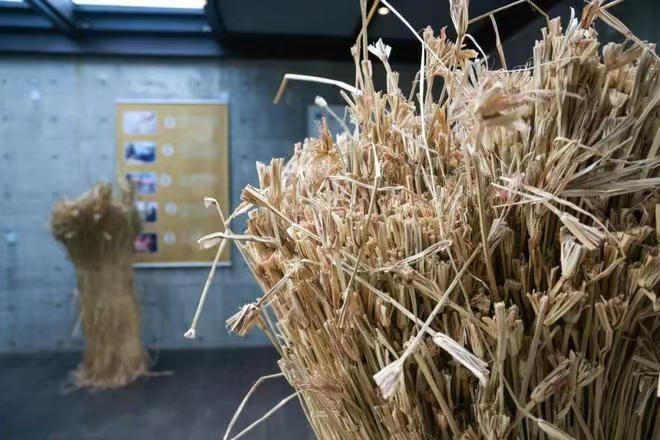

黄草编织
2024年3月,国务院总理李强作政府工作报告指出“推进非物质文化遗产保护传承”。
2024年12月,习近平总书记强调，要以此次申遗成功（“北京中轴线——中国理想都城秩序的杰作”列入《世界遗产名录》）为契机，进一步加强文化和自然遗产的整体性、系统性保护，切实提高遗产保护能力和水平，守护好中华民族的文化瑰宝和自然珍宝。在非物质文化遗产法执法检查过程中，检查组坚持正确方向，聚焦检查重点，推进非物质文化遗产系统性保护，助力非遗传承开创新局面。
国家“十四五”规划和2035年远景目标纲要部署了强化非遗系统性保护的重要任务。《“十四五”文化发展规划》对非遗工作作出具体安排。
徐行草编，上海市嘉定区传统美术，国家级非物质文化遗产之一，是一种传统的民间编结手工艺，主要流行于上海市嘉定区徐行镇。徐行系江南是草编之乡，当地民众习惯使用本乡出产的黄草秆茎来编织生活用品。徐行草编与嘉定竹刻同被誉为嘉定南北“二宝”，这一美誉，不仅是指在编织技巧高超，更是指图案设计上蕴含着较高的文化含量。
在很久以前，在上海嘉定徐行的新泾村住着一位名叫黄茅草的姑娘，黄茅草是孤儿，靠给财主家放牛割草为生，很穷，到了出嫁年龄连双像样的鞋也没有。正当她伤心时，老牛衔了把黄草放在她面前，黄姑娘眼前一亮，编了双草鞋，穿去了婆家。漂亮的黄草鞋引人赞美，很快，全村人都向她来讨教编草鞋的技艺，并给了她“黄草编仙子”的美誉，还把这个村子改名为“蒲鞋村”。
唐初，嘉定东门外澄桥附近的居民开始用野生黄草编织蒲鞋，后发展到赠送亲友并上市出售。据清代史学家王鸣盛考证，黄草业最早始于唐代，拖鞋在唐代已作为苏州郡的土贡之一。当时所作的一些精品草鞋是士大夫夏季消暑的珍品。
至元代，谢应芳在《嘉定道中二首(其一)》中写道：“野翁织履街头卖，日暮裹盐市酒归”，描述当时徐行草编普及的图景。
至清代，更是普列为贡品。江南官府晋京一般均携带几件精美的徐行草编以作贡品，其发展至今已有千余年历史。《康熙嘉定县志》记载，草编起始仅浦鞋一种，主要原料是黄草，男女习以为业，至清同治年间，逐渐形成了以徐行镇为中心的黄草编制区，成为当地农民的一项主要家庭手工业。
20世纪初,徐行草编开始与国际市场接轨。
1914年,意大利斯曲罗斯洋行聘请徐行当地人汪季和，朱石麟为代理人，向徐行农民收购黄草织品，转销东南亚和欧美各地。从此，徐行黄草织品开始走出国门，进入国际市场。
1953年,李月琴设计并编织的和平鸽图案拖鞋在民主德国举办的莱比锡国际博览会上荣获艺术奖章，进一步提升了其国际知名度。
1956年,徐行草编工艺艺人出席中国工艺美术艺术代表大会，受到党和国家领导人的接见。
1994年,徐行镇被中华人民共和国文化部命名为“中国民间艺术之乡”。
2008年月7日,草编（徐行草编）经中华人民共和国国务院批准列入第二批国家级非物质文化遗产名录，项目编号Ⅶ-54。
2009年,举办草编培训班，推动技艺传承。
2011年,开发了草编胸针、插花瓶、立体卡通“兔宝宝”等新产品。
2015年,纳入全民教育体系，构建教育体系，壮大传承队伍。
2017年,作为全国农民文化艺术“一村一品”展示活动的一部分，提升知名度。
2018年,入选第一批国家传统工艺振兴目录。
2019年,镇政府拨款支持“徐行草编振兴项目”，成立工作室和传习所，优化人才结构；成立上海徐行草编文化发展有限公司，推动产业化发展。
同年11月,《国家级非物质文化遗产代表性项目保护单位名单》公布，上海徐行黄草编织专业合作社获得“草编（徐行草编）”项目保护单位资格。
2023年,与时尚品牌联名，开发蓝绿色草编工艺品，提升市场竞争力。
同年10月31日,《国家级非物质文化遗产代表性项目保护单位名单》公布，草编（徐行草编）项目保护单位上海徐行黄草编织专业合作社评估合格。
2024年,一场关于徐行草编黄草编织的展览在东华大学文琦书店展开。展品是由“Z世代”青年结合草编工艺融入现代审美,创作出的一系列时尚生活用品，如灯具、花器、包袋以及饰物，“传统”“土味”的草编在他们手中变得可穿搭、可装饰。
2021年,在中国共产党建党百年之际,王勤团队大胆尝试将3D打印技术与草编技艺相结合,制作出一艘栩栩如生的南湖红船。这种创新不仅解决了传统草编在造型上的难题，还为传统手工艺注入了现代科技的活力。
计阿金,徐行草编大师,1901年出生,熟练黄草的编织技巧，是当地的黄草编织能手。
计阿金女儿计月英,(1921年出生),从小就跟母亲学艺，到七八岁时已能编织出几十种花式的黄草织品，成为当地的黄草编织能手。
计月英儿子计学成(1942年出生,原徐行工艺品厂设计师)，从小受到母亲的熏陶，熟悉黄草的编织技巧，并能自行设计编织图案，他设计的“孔夫子周游列国”草编织品获“上海市工艺美术展览会创新奖”，草编织品“菊花包”获“民间工艺优秀作品奖”。
女儿计常红,1968年出生,学艺于父亲计学成，熟悉黄草的编织技巧。
王勤是“徐行草编”上海市市级传承人,上海嘉定人,干这行已有30多年。机缘巧合,热爱草编的王勤结识了徐行草编市级传承人、草编设计大师计学成,她虚心向计师傅请教,拜他为师,也开始了她更全面学习徐行草编的征程。2014年师傅退休后,王勤开始正式接手工作室的各项工作。2018年参加中国第五届非物质文化遗产博览会传统工艺比赛,获草柳藤编组第二名。与上海艺术品博物馆合作完成徐行草编创新产品的设计与制作新品20余件。参与中国非物质文化遗产博览会等国家级、市区镇级各类展览展示活动20余次。三件作品参加2018年11月进口博览会的展览。
陈蛟,“徐行草编”嘉定区区级非遗传承人,上海嘉定人。从小受外婆和母亲的熏陶喜欢上草编,后拜师于徐行草编市级传承人王勤老师,目前从事徐行草编行业10余年。
1、去苋
晒干的黄草，将顶部的花苋剪去后留用。
2、搓绞
为了增加黄草的韧度和牢度,延长黄草织品使用寿命，可以对开劈染色后的黄草进行搓绞。搓绞既可以手工进行，也可以用绞绳机提高效率。
3、开劈
由于黄草茎杆较粗,必须经过开劈,使其黄草茎杆变成2--4mm的细茎,作为编织的原材料。
4、模具
编织不同的草编织品，一般需要选用相应的模具进行编织。按照形状，模具主要分为拖鞋模，茶杯模，提包模，果盒模等。按照材质，模具主要分为木模，竹模，泡沫塑料模等。
5、染色
要编织出色彩缤纷的黄草织品，需对开劈好的黄草原材料进行染色,再用清水漂洗，随后晒干备用。
6、编织
不同的黄草织品，编织方法不同，一般需要经过起底、装模、编面、结口、缝边、装配件等步骤,才能最终编织成一件精美的草编织品。
徐行草编采用纯手工制作，编织时要花费大量的时间，无法形成规模化的生产，经济效益不高，难以抵御现代市场经济的冲击。原来编织手大都已转业。二是徐行草编的样式缺乏创新，不能满足人们多元化的需求。目前，徐行以草编为生的手工艺人已是凤毛麟角，仅有少数农村妇女利用闲暇编织一些草鞋、提包零星销售。徐行草编的主力军多是年过花甲的老人，缺少年轻人的加入。
为了保证徐行草编的原料，政府专门开辟出一块土地进行黄草种植。在政府的推动下,今年预计能收获干黄草500公斤,比去年多了一倍,这些原材料将提供给徐行草编合作社、阳光工坊、阳光家园等草编工作室。
徐行镇加大了创意“投资”，与同济大学、上海大学美术学院、上海工艺美术职业学院等艺术类院校进行沟通，成立“艺术高校创意设计室”，对接上海艺术品博物馆等专业单位，研究徐行草编的产品设计及产业开发；同时，积极参与各级各类非遗研讨活动。
徐行小学一直致力于将非遗草编文化引进校园，通过开设草编课程，落实劳动实践，在传习与辐射草编文化的同时培养了团结合作、耐心细致、坚忍不拔、吃苦耐劳的精神品质，增强文化自觉和文化自信。